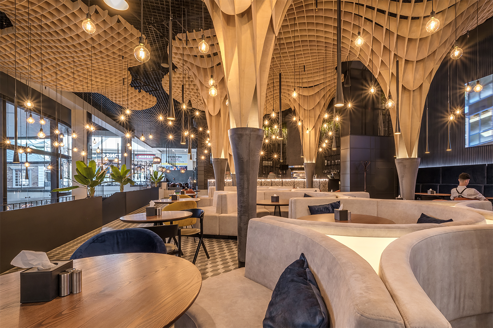

Our Story
Founded in 2010 by acclaimed Chef Michael Laurent, Savoria began as a small family-owned bistro with a simple mission: to create memorable dining experiences through exceptional food and warm hospitality.
Over the years, we've grown from our humble beginnings into one of the city's premier dining destinations, while staying true to our core values of culinary excellence, sustainability, and community.
Every dish at Savoria tells a story – from locally sourced ingredients to globally inspired flavors, our menu reflects Chef Laurent's journey through the world's most vibrant food cultures, reinterpreted with modern techniques and artistic presentation.